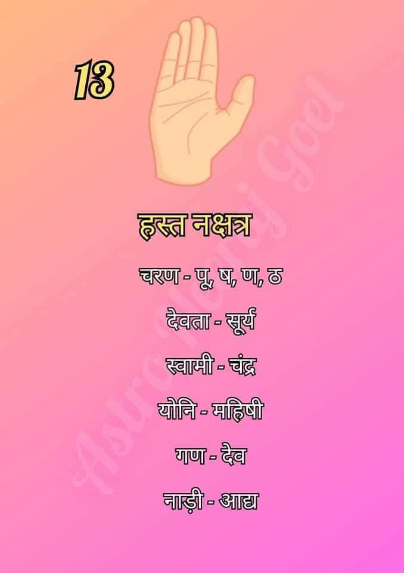

हस्त नक्षत्र (Hasta Nakshatra)
हस्त नक्षत्र आकाश मंडल का तेरहवां नक्षत्र है। यह नक्षत्र अपने सूक्ष्म कौशल, निपुणता और कार्यकुशलता के लिए जाना जाता है।

सामान्य स्वभाव:
हस्त नक्षत्र में जन्मे जातक अत्यंत बुद्धिमान, चतुर और अपने हाथों के कार्यों में निपुण होते हैं। ये व्यवहार से बहुत ही मिलनसार और दयालु प्रवृत्ति के होते हैं।
हस्त नक्षत्र की मुख्य विशेषताएँ
- कुशलता: ये अपने हाथों से काम करने में माहिर होते हैं, चाहे वह कला हो, तकनीक हो या कोई बारीकी भरा काम।
- बुद्धिमत्ता: इनमें निर्णय लेने की तीव्र क्षमता और विश्लेषणात्मक बुद्धि होती है।
- विनम्रता: इनका स्वभाव मृदु होता है, जिससे ये सामाजिक रूप से बहुत सम्मानित होते हैं।
- ईमानदारी: ये अपने कार्यों के प्रति बहुत ईमानदार और समर्पित होते हैं।
- व्यावहारिकता: ये कल्पनाओं के बजाय वास्तविक धरातल पर काम करना पसंद करते हैं।
शिक्षा एवं करियर
हस्त नक्षत्र के जातक अपनी निपुणता और बारीकियों को परखने की क्षमता के कारण निम्नलिखित क्षेत्रों में अधिक सफल होते हैं:
- शिक्षा एवं अध्यापन (Teaching & Research)
- चिकित्सा एवं सर्जरी (Medical & Surgery)
- ज्योतिष एवं परामर्श (Astrology & Consultancy)
- कारीगरी एवं हस्तशिल्प (Craftsmanship & Fine Arts)
- प्रशासनिक एवं लेखा कार्य (Administration & Accounting)